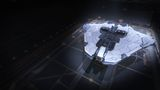

Макс. грузовместимость (без щита)
~230 т
Krait Mk II вмещает ~230 т без защиты (~166 т со щитом), садится на среднюю площадку и не требует ранга. Даже с грузом он быстро проходит маршрут. Но трюм скромен по сравнению со специализированными торговцами: Type-8 и даже недорогой Type-6 перевозят больше за те же деньги, а крупные грузовики далеко впереди. Преимущество Krait в удобстве: торговля — лишь одна из задач универсального хорошо вооружённого корабля, который может за себя постоять.

У этого корабля оценка пригодности по шкале 1–100 отражает возможности полностью улучшенной у инженеров сборки для этой роли в сравнении со всеми другими кораблями той же роли. См. как выставляются оценки кораблям.
Krait Mk II — средний универсальный корабль с уклоном в бой. Он может торговать, но создан не для этого. Снимите орудия и поставьте грузовые стеллажи, и он повезёт ~230 т, или ~166 т, если оставить щит. Средняя площадка позволяет садиться почти везде, ранг не нужен. На том же корабле можно охотиться за наградами, добывать руду, взять торговый контракт или пройти выгодный круговой маршрут, не покупая второй корабль.
Но как грузовик он середняк. Type-8 везёт гораздо больше с той же средней площадки. Недорогой и экономичный Type-6 перевозит почти столько же за малую долю цены, а крупные грузовики везут от трёх до пяти раз больше. Зато Krait Mk II может за себя постоять: три больших крепления и высокая скорость не дают ему стать лёгкой добычей при перехвате. Торговля для него — лишь одно из применений уже имеющегося универсального корабля.
Попутные перевозки: торговые рейсы и контракты на уже имеющемся универсальном боевом корабле, защищённые доставки через опасные системы и подработка между другими занятиями, когда покупать грузовик невыгодно.
Что Krait Mk II даёт на торговом маршруте:
Трюм скромен: Type-8 вмещает примерно вдвое больше с той же площадки, недорогой Type-6 возит почти столько же намного дешевле, а крупные грузовики перевозят в несколько раз больше. Дальность с грузом невелика, а щит занимает большой дополнительный отсек. Торговый Krait Mk II хорош удобством и самозащитой, а не вместимостью или выгодой на кредит. Для серьёзного заработка на крупных партиях специализированные грузовики явно лучше.
Средняя площадка, щит ~600+ МДж и три больших крепления делают его защищённым грузовым середняком. Скромный трюм ~166 т под щитом по сравнению со специализированными грузовиками ограничивает оценку до 64.
Итоговая оценка 64/100 основана на критериях торговой роли, расположенных по приоритету. У каждого критерия есть вес (доля от 100). Корабль получает часть баллов по каждому из них в зависимости от того, как выглядит на фоне всех соперников. Эти баллы складываются в итоговую оценку.
| Критерий | Баллы | Почему столько |
|---|---|---|
| Максимальная грузовместимость | 19/35 | ~230 т без защиты и ~166 т со щитом при схеме дополнительных отсеков 6·6·5·5·4·3·3·2·1 — середина среди соперников. Type-8 (~400 т) почти удваивает вместимость с той же площадкой, Python (~284 т) и Type-6 (~112 т, выгоднее за кредит) обходят Krait по эффективности, а крупные грузовики вмещают 790–1048 т. |
| Класс площадки и доступ к рынкам | 16/20 | Средняя площадка даёт доступ к большинству станций. Ранг и разрешение не нужны: купить корабль и посадить его почти где угодно может любой. По доступу к рынкам он наравне с лучшими средними торговцами и превосходит все грузовики с большой площадкой. |
| Дальность прыжка с грузом | 7/15 | Около ~9 св. лет с грузом в начальной сборке, ~14 в классе A и ~22 св. лет с инженерными улучшениями и FSD 5A с «Увеличенной дальностью». Достаточно, но немного. Щит занимает дополнительный отсек класса 6, а более лёгкие средние корабли вроде Phantom и Asp прыгают с грузом дальше. |
| Живучесть | 17/20 | Три больших крепления, четыре внешних модуля и улучшенный двухконтурный щит на ~600+ МДж при массе корпуса 320 т позволяют выиграть или пережить перехват. Это намного лучше, чем у специализированного грузовика, которому остаётся только бежать. |
| Скорость и цена | 5/10 | Базовые 240/330 м/с с ростом форсажа до ~370 м/с позволяют уйти от большинства пиратов. Но корпус за ~45.2 млн кр. (~72 млн с инженерными улучшениями) не дешевле более вместительной сборки Type-8. Низкая грузовместимость на кредит ухудшает оценку стоимости. |
| Взвешенный итог | 64/100 | Совпадает с оценкой пригодности этого корабля для выбранной роли в заголовке. |
Веса отражают редакционную расстановку приоритетов для этой роли, а не формулу из игры. Длина полосы показывает, какую часть баллов корабль получил по критерию: самые длинные принесли больше всего баллов, самые короткие показывают слабые места. См. как выставляются оценки кораблям.
В каждой таблице корабли оцениваются именно для торговли, с разделением по размерам посадочных площадок. Столбец Макс. грузовместимость показывает максимальную грузовместимость со щитом. Оценка пригодности по шкале 1–100 та же, что и на всём сайте.
| Корабль | Класс | Макс. грузовместимость | Плюсы и минусы | Оценка |
|---|---|---|---|---|
| Type-8 Transporter | Средний | ~406 т | Оценка выше; доступ к рынкам; скорость / выгодаДальность с грузом | 76 |
| Corsair | Средний | ~318 т | Оценка выше; доступ к рынкам; скорость / выгодаДальность с грузом | 74 |
| Python | Средний | ~294 т | Оценка выше; доступ к рынкам; живучестьСкорость / выгода | 72 |
| Type-6 Transporter | Средний | ~114 т | Оценка выше; доступ к рынкам; скорость / выгодаЖивучесть | 65 |
| Krait Mk II здесь | Средний | ~230 т | — этот корабль (точка отсчёта) | 64 |
| Krait Phantom | Средний | ~190 т | Дальность с грузом; доступ к рынкамОценка ниже; живучесть | 62 |
| Type-11 Prospector | Средний | ~288 т | Доступ к рынкам; живучестьОценка ниже; скорость / выгода | 60 |
| Asp Explorer | Средний | ~130 т | Дальность с грузом; доступ к рынкамОценка ниже; живучесть | 58 |
| Keelback | Средний | ~98 т | Живучесть; доступ к рынкамОценка ниже; груз | 52 |
Оценены 9 торговых кораблей со средней площадкой; лидирует Type-8 Transporter (76). Все они садятся на площадки того же класса и являются прямыми альтернативами Krait Mk II.
| Корабль | Класс | Макс. грузовместимость | Плюсы и минусы | Оценка |
|---|---|---|---|---|
| Panther Clipper Mk II | Большой | ~662 т | Оценка выше; груз; доступ к рынкамСкорость / выгода | 98 |
| Imperial Cutter | Большой | ~794 т | Оценка выше; живучесть; доступ к рынкамСкорость / выгода | 95 |
| Type-9 Heavy | Большой | ~790 т | Оценка выше; груз; доступ к рынкамЖивучесть | 94 |
| Type-7 Transporter | Большой | ~310 т | Оценка выше; дальность с грузом; грузЖивучесть | 78 |
| Anaconda | Большой | ~470 т | Оценка выше; дальность с грузом; живучестьСкорость / выгода | 76 |
| Imperial Clipper | Большой | ~250 т | Оценка выше; скорость / выгода; живучестьГруз | 74 |
| Federal Corvette | Большой | ~618 т | Оценка выше; живучесть; грузСкорость / выгода | 70 |
| Type-10 Defender | Большой | ~534 т | Оценка выше; живучесть; доступ к рынкамДальность с грузом | 68 |
| Caspian Explorer | Большой | ~434 т | Оценка выше; доступ к рынкам; живучестьДальность с грузом | 66 |
| Beluga Liner | Большой | ~370 т | Доступ к рынкам; живучестьОценка ниже; дальность с грузом | 58 |
Среди торговых кораблей с большой площадкой оценены 10; лидирует Panther Clipper Mk II (98). Это более крупные площадки и бюджеты. По характеристикам такие корабли превосходят Eagle, но требуют площадки другого класса.
| Корабль | Класс | Макс. грузовместимость | Плюсы и минусы | Оценка |
|---|---|---|---|---|
| Cobra Mk IV | Малый | ~92 т | Скорость / выгода; доступ к рынкамОценка ниже; живучесть | 52 |
| Cobra Mk V | Малый | ~110 т | Доступ к рынкам; скорость / выгодаОценка ниже; живучесть | 52 |
| Cobra Mk III | Малый | ~64 т | Скорость / выгода; доступ к рынкамОценка ниже; груз | 48 |
| Dolphin | Малый | ~88 т | Доступ к рынкам; дальность с грузомОценка ниже; живучесть | 46 |
| Hauler | Малый | ~26 т | Доступ к рынкам; скорость / выгодаОценка ниже; груз | 42 |
Среди торговых кораблей с малой площадкой оценены 5; лидирует Cobra Mk IV (52). Это более дешёвые корпуса и более компактные площадки. По цифрам они выигрывают, но относятся к другому классу площадок.
При цене ~45.2 млн кр. Krait Mk II не дешевле полностью оснащённого специализированного грузовика, поэтому покупать его только для торговли редко имеет смысл: Type-8 перевозит больше за меньшие деньги. Но если вы уже летаете на Krait в бой или выполняете разные задачи, запасной набор грузовых стеллажей превратит его в грузовик за цену одних модулей.
Специализированное торговое оснащение с основными модулями класса A, двухконтурным щитом и полным комплектом грузовых стеллажей обойдётся примерно в 72 млн кр. Это дороже сопоставимой сборки Type-8, которая везёт вдвое больше.
Не покупайте Krait Mk II в качестве грузовика: Type-8 или Type-6 выгоднее по вместимости на кредит. Лучше поставьте грузовые стеллажи на корабль, который уже есть, и торгуйте между другими занятиями.
Защищённая грузовая сборка на универсальном корпусе. На первом этапе обойдитесь покупными модулями: снимите лишнее и поставьте грузовые стеллажи. Класс A даёт базовую торговую сборку с двухконтурным щитом и парой турелей для самообороны. Инженерные улучшения доводят до максимума дальность с грузом и защищённую вместимость, сохраняя достаточно огневой мощи на случай редкого перехвата, от которого не уйти.
| Отсек | Начальная · только покупка | Класс A · без улучшений | С инженерными улучшениями | Примечания |
|---|---|---|---|---|
| Орудийные крепления | ||||
| Большое 1 | — | 3E мультипушка (турель) | G5 Перегрузка + Автозарядка | Одна большая турельная мультипушка — всё, что нужно грузовику для самообороны. «Перегрузка» повышает урон, а автозарядка поддерживает огонь без вашего участия, пока вы пилотируете. |
| Среднее 1 | — | 2E Лучевой лазер (турель) | G5 Эффективный + Теплоотвод | Турельный лучевой лазер снимает щит с перехватчика. «Эффективный» уменьшает расход энергии и нагрев, а Теплоотвод отводит тепло, чтобы корабль сохранял низкую тепловую сигнатуру. |
| Внешние крепления | ||||
| Внешнее 1 | — | 0A Усилитель щита | G5 Усиленная конструкция + Суперконденсаторы | Первый усилитель щита — самый дешёвый способ заметно повысить прочность двухконтурного щита в МДж и защитить груз. |
| Внешнее 2 | — | 0A Усилитель щита | G5 Усиленная конструкция + Суперконденсаторы | Второй усилитель с «Усиленной конструкцией» добавляет щиту прочности. Отдача снижается, но по защите на единицу массы это всё ещё лучший вариант для грузовика. |
| Внешнее 3 | — | 0I Пусковая установка тепловых ловушек | G1 Запас боеприпасов (нет экспериментального эффекта) | Необязательно, низкий приоритет. «Запас боеприпасов» добавляет залпы тепловых ловушек. Тепловые ловушки сбивают прицел поворотных и турельных орудий. |
| Внешнее 4 | — | 0I Теплоотводная катапульта | G1 Запас боеприпасов (нет экспериментального эффекта) | Необязательно, низкий приоритет. «Запас боеприпасов» добавляет заряды теплоотводной катапульты. Сбрасывает тепло при скрытном ходе и для восстановления после использования «Теплоотвода». |
| Основные модули | ||||
| Обшивка | Лёгкий сплав | Лёгкий сплав | G5 «Облегчённый» (нет экспериментального эффекта) | |
| Силовая установка | 7E Силовая установка | 7A Силовая установка | G5 Низкое тепловыделение + Рассеивание тепла | Силовая установка класса 7 питает щит, усилители и две турели с запасом. «Низкое тепловыделение» и «Рассеивание тепла» снижают нагрев и тепловую сигнатуру. |
| Маневровые двигатели | 6E Маневровые двигатели | 6A Маневровые двигатели | G5 Грязная настройка двигателей + Форсированные двигатели | Класс A маневровые двигатели сохраняют форсаж с грузом, позволяющий уйти от пиратов; Грязная настройка двигателей с «Форсированными двигателями» добавляет максимальной скорости, нужной для отхода. |
| Рамочно-сместительный двигатель (FSD) | 5E Рамочно-сместительный двигатель (FSD) | 5A Рамочно-сместительный двигатель (FSD) | G5 Увеличенная дальность + Управление массой | Дальность определяет эффективность торговли. Класс A вместе с улучшением Увеличенная дальность (G5) и «Управлением массой» даёт максимальную дальность с грузом и ускоряет круговые рейсы. |
| Система жизнеобеспечения | 4E Система жизнеобеспечения | 4D Система жизнеобеспечения | G5 Облегчённый (нет экспериментального эффекта) | Класс D экономит массу, Облегчённый снижает её ещё сильнее; у модуля жизнеобеспечения нет экспериментального эффекта. |
| Распределитель энергии | 7E Распределитель энергии | 7A Распределитель энергии | G5 Приоритет двигателей + Сверхпроводники | Класс A поддерживает заряд форсажа и щитовых ячеек в схватке; Приоритет двигателей вместе со «Сверхпроводниками» помогает чаще давать форсаж при отходе. |
| Сенсоры | 6E Сенсоры | 6D Сенсоры | G5 Облегчённый (нет экспериментального эффекта) | Поставьте класс D и облегчённое улучшение: торговому кораблю большая дальность сенсоров не нужна, а снижение массы помогает грузовместимости и дальности. |
| Топливный бак | 5C Топливный бак | 5C Топливный бак | (нет чертежа улучшения) | Штатный бак класса 5. Ёмкость фиксирована и не поддаётся инженерному улучшению. |
| Дополнительные отсеки | ||||
| Размер 6 | 6E Грузовой стеллаж | 6C Генератор двухконтурного щита | G5 Усиленный + Повышенная ёмкость | Двухконтурный генератор быстро восстанавливает щит под огнём. Это то, что нужно кораблю, который отбивается от перехватчиков. «Усиленный» доводит прочность в МДж до максимума, а «Повышенная ёмкость» добавляет ещё. |
| Размер 6 | 6E Грузовой стеллаж | 6E Грузовой стеллаж | (нет чертежа улучшения) | Необязательно: добавляет место для груза, полезно специализированному грузовику. Грузовые стеллажи не поддаются инженерному улучшению. |
| Размер 5 | 5E Грузовой стеллаж | 5E Грузовой стеллаж | (нет чертежа улучшения) | Необязательно: добавляет место для груза, полезно специализированному грузовику. Грузовые стеллажи не поддаются инженерному улучшению. |
| Размер 5 | — | 5E Грузовой стеллаж | (нет чертежа улучшения) | Необязательно: добавляет место для груза, полезно специализированному грузовику. Грузовые стеллажи не поддаются инженерному улучшению. |
| Размер 4 | — | 4E Грузовой стеллаж | (нет чертежа улучшения) | Необязательно: добавляет место для груза, полезно специализированному грузовику. Грузовые стеллажи не поддаются инженерному улучшению. |
| Размер 3 | — | 3E Грузовой стеллаж | (нет чертежа улучшения) | Необязательно: добавляет место для груза, полезно специализированному грузовику. Грузовые стеллажи не поддаются инженерному улучшению. |
| Размер 3 | — | 3C Банк щитовых ячеек | G4 Специализированный + Управление потоком | Необязательно, низкий приоритет. Специализация снижает всплеск нагрева и энергопотребления банка. Позволяет экстренно восстановить щит. |
| Размер 2 | — | 2E Грузовой стеллаж | (нет чертежа улучшения) | Необязательно: добавляет место для груза, полезно специализированному грузовику. Грузовые стеллажи не поддаются инженерному улучшению. |
| Размер 1 | — | 1I Подробный сканер поверхности | G5 Увеличенный радиус сканирования зондов (нет экспериментального эффекта) | Необязательно, низкий приоритет. Увеличенный радиус сканирования расширяет зону покрытия зондов. Позволяет картографировать планеты для сбора исследовательских данных. |
| Планировщики и экспорт | ||||
| Открыть в Coriolis | открыть | открыть | открыть | Открывается на coriolis.io одним нажатием. |
| Открыть в EDSY | открыть | открыть | открыть | Открывается на edsy.org одним нажатием. |
| Скопировать SLEF | Копирует исходные данные формата экспорта оснащения корабля (SLEF) для выбранного варианта. | |||
Оставьте двухконтурный генератор в первом отсеке класса 6. Если корабль отбивается от перехватчиков, нужно защитить груз и быстро восстановить щит. Все остальные дополнительные отсеки заполните грузом. Поставьте щит класса 5 или летайте без щита на безопасных маршрутах, если нужны дополнительные 32-64 т.
Купите корпус: штатно на нём стоит Лёгкий сплав, за обшивку доплачивать не надо. Поставьте модули класса E — грузовые стеллажи в три самых просторных дополнительных отсека (два размера 6 и один размера 5), чтобы сразу начать перевозки. Остальные дополнительные отсеки оставьте пустыми до класса A.
В начальной сборке оставьте орудийные и внешние крепления пустыми: пока без турелей, усилителя щита и катапульт. Оставьте штатные основные модули класса E и бак класса 5 — штатный топливный бак, чтобы уменьшить стартовые расходы.
На этом этапе щита нет: первый отсек размера 6 занимает грузовой стеллаж, а не генератор. Используйте начальную сборку только как дешёвый невооружённый грузовик на пробу. Перед полётами по опасным маршрутам поставьте двухконтурный щит и турели для самообороны в сборке класса A.
Приоритет перехода на класс A для защищённого грузовика:
Для грузовика важнее всего FSD и маневровые двигатели: дальние прыжки с грузом ускоряют рейсы, а форсаж помогает уйти от беды с полным трюмом. Оставьте штатную обшивку — Лёгкий сплав. Торговцу нужна дальность, а не толстая броня. Композит военного класса сократил бы дальность с грузом ради защиты в бою, которого вообще лучше избегать. Щит, усилители и банк щитовых ячеек нужны на случай редкой схватки, от которой не уйти.
Стандартные торговые улучшения: дальность, скорость и защищённый трюм. Felicity Farseer (при максимальном развитии) даёт FSD. Закрепите чертежи, чтобы применять улучшения G1→G5 удалённо.
| Модуль | Чертёж | Экспериментальный эффект | Инженер |
|---|---|---|---|
| Рамочно-сместительный двигатель (FSD) (5) | Увеличенная дальность (G5) | Управление массой | Felicity Farseer |
| Маневровые двигатели (6) | Грязная настройка двигателей (G5) | Форсированные двигатели | Professor Palin / Mel Brandon |
| Двухконтурный щит (6) | Усиленный (G5) | Повышенная ёмкость | Lei Cheung |
| Усилители щита | Усиленная конструкция (G5) | Суперконденсаторы | Didi Vatermann |
| Силовая установка (7) | Низкое тепловыделение (G5) | Рассеивание тепла | Hera Tani |
| Распределитель энергии (7) | Приоритет двигателей (G5) | Сверхпроводники | The Dweller |
| мультипушка (3) | Перегрузка (G5) | Автозарядка | Tod McQuinn |
| Лучевой лазер (2) | Эффективный (G5) | Теплоотвод | Broo Tarquin |
| Система жизнеобеспечения / Сенсоры | Облегчённый (G5) | — | Etienne Dorn |
| Обшивка | Облегчённый (G5) | — | Selene Jean |
От низких до умеренных: в основном чертежи для FSD, двигателей, щита и силовой установки средних классов. Если материалы уже собраны, их нужно только потратить, а не добывать. При необходимости уточните расход по каждому чертежу.
Примерное изменение параметров между тремя вариантами (цифры ориентировочные, а не точные результаты улучшений):
| Показатель | Начальная | Класс A | С инженерными улучшениями |
|---|---|---|---|
| Макс. грузовместимость (т) | ~160 | ~160 | ~166 (со щитом) |
| Обшивка | Лёгкая (штатная) | Облегчённый | Лёгкая: +сопротивление, −масса |
| Щит (МДж) | нет | ~340 | ~600+ |
| Скорость (с форсажем) | 330 м/с | 330 м/с | ~370 м/с |
| Прыжок с грузом (св. лет) | ~9 | ~14 | ~22 |
| Живучесть | умеренный | хорошая | высокий |
Во всех трёх вариантах обшивка одна и та же: лёгкий сплав. В инженерной сборке «Облегчённый» (Armour_Advanced) G5 снижает массу корпуса и даёт ~8% сопротивления кинетическому, тепловому и взрывному урону. Это защита без потери дальности из-за тяжёлой брони. С инженерными улучшениями Krait Mk II возит ~166 т под восстанавливающимся двухконтурным щитом при ~370 м/с, прыгает с грузом на ~22 св. лет и может выиграть перехват или уйти. Малозаметная, охлаждённая силовая установка, лучевой лазер с «Теплоотводом» и теплоотводная катапульта снижают тепловую сигнатуру. Это тихий и самостоятельный грузовик, но за рейс он перевозит лишь от трети до пятой части груза специализированного транспорта.
Подойдёт любой круговой маршрут со средним объёмом груза: несколько заданий одновременно, рейс с заработком на разнице цен или защищённая доставка через систему с анархией. Универсальный корабль Faulcon DeLacy удобно использовать для боёв и добычи. Торговля — одна из нескольких задач, которые он выполняет с одной базы.
Krait Mk II удобен для попутных перевозок, но это не специализированный грузовик. При оценке 64 он уверенно держится в середине среди средних торговцев: ~166 т со щитом, высокая скорость, без требования к рангу и с возможностью отбиться от перехватчиков. Всё это действительно полезно, если корабль у вас уже есть. Но он уступает Type-8 и недорогому Type-6 по вместимости на кредит и намного отстаёт от крупных грузовиков по тоннажу. Поэтому его оценка остаётся в районе шестидесяти. Поставьте грузовые стеллажи на уже имеющийся Krait, а если хотите заниматься именно перевозками, купите специализированный грузовик.
Цифры на этой странице сверены по следующим источникам.